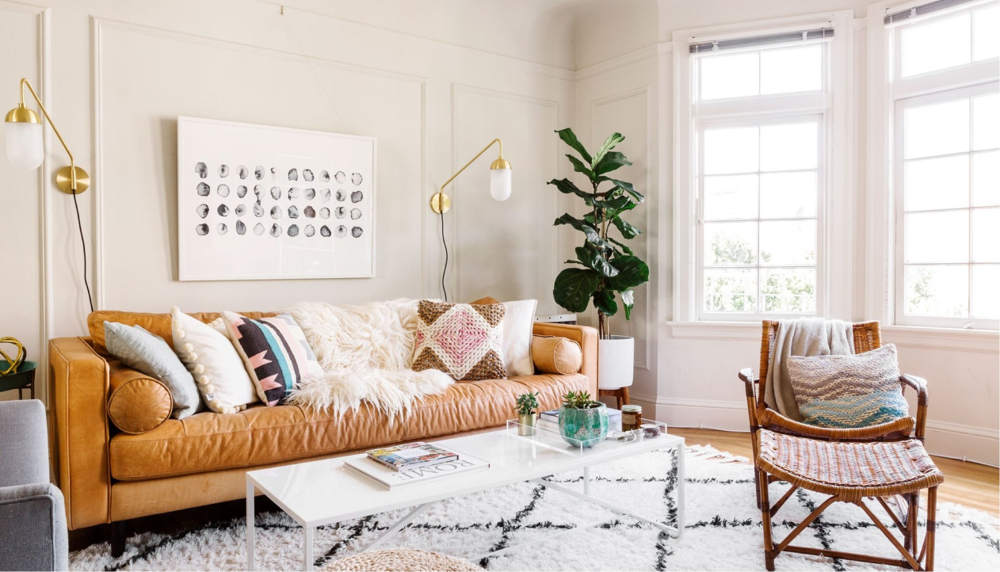

Выбор мебели
Выбор экологичной мебели имеет огромное значение в контексте осознанного потребления. Экологические материалы и процессы производства мебели помогают снизить негативное влияние на окружающую среду. Они минимизируют выбросы вредных веществ, сохраняют природные ресурсы и уменьшают накопление отходов. Выбирая экологичную мебель, мы поддерживаем компании, которые стремятся к устойчивому развитию и способствуем созданию здоровой и экологически чистой обстановки в наших домах и офисах.
Лайфхаки для экологичного дизайна интерьера.
В последние годы все больше людей обращают внимание на экологические проблемы и стараются сделать свой вклад в сохранение природы. Это относится и к мебельному производству, где важно не только качество и дизайн, но и экологичность. В этой статье мы собрали несколько лайфхаков для тех, кто хочет создавать экологичный дизайн интерьера и выбирать мебель с учетом ее производственного процесса.
 Выбирайте мебель из натуральных материалов
Выбирайте мебель из натуральных материаловОдним из основных принципов экологичного производства мебели является использование натуральных материалов. Это может быть дерево, бамбук, льняная ткань, органический хлопок и другие материалы, которые производятся без использования химических веществ.
 Избегайте мебели, которая содержит токсичные вещества
Избегайте мебели, которая содержит токсичные веществаНекоторые мебельные материалы могут содержать токсичные вещества, которые вредны для здоровья и окружающей среды. При выборе мебели обращайте внимание на ее состав и старайтесь избегать токсичных веществ, таких как формальдегид.
 Покупайте мебель у компаний, которые используют экологичные производственные методы
Покупайте мебель у компаний, которые используют экологичные производственные методыСегодня все больше компаний переходят на экологичные производственные методы, которые позволяют сократить отходы и использовать возобновляемые источники энергии. При выборе мебели обращайте внимание на компании, которые придерживаются экологичных производственных методов.
 Переиспользуйте и перерабатывайте старую мебель
Переиспользуйте и перерабатывайте старую мебельПереиспользование и переработка старой мебели является одним из самых экологичных способов создания новой мебели. Старые предметы мебели можно использовать как материал для создания новых предметов или отремонтировать их, чтобы они продолжили служить.
 Ставьте на долговечность и качество
Ставьте на долговечность и качествоЭкологичное производство мебели связано с понятием долговечности и качества.